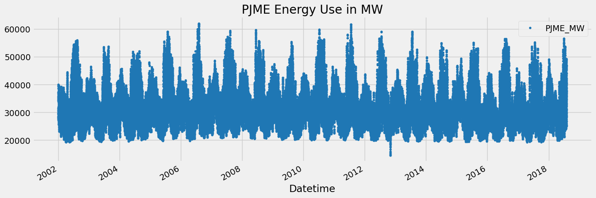
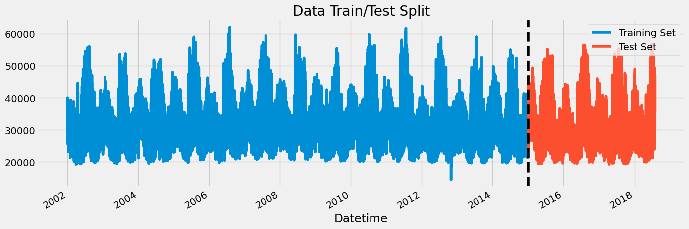
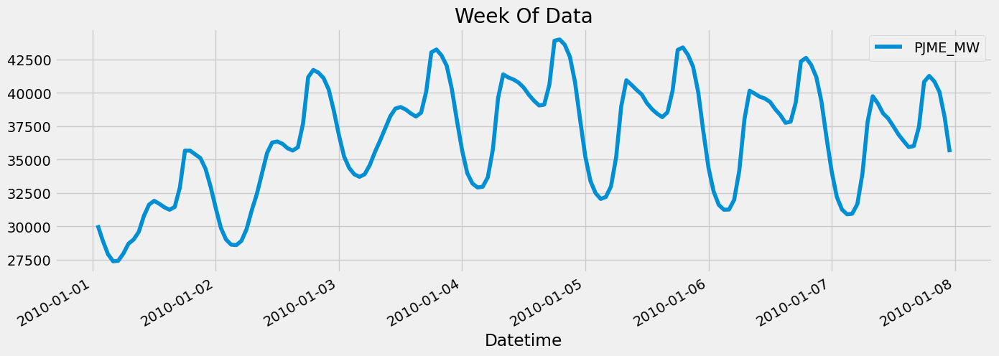
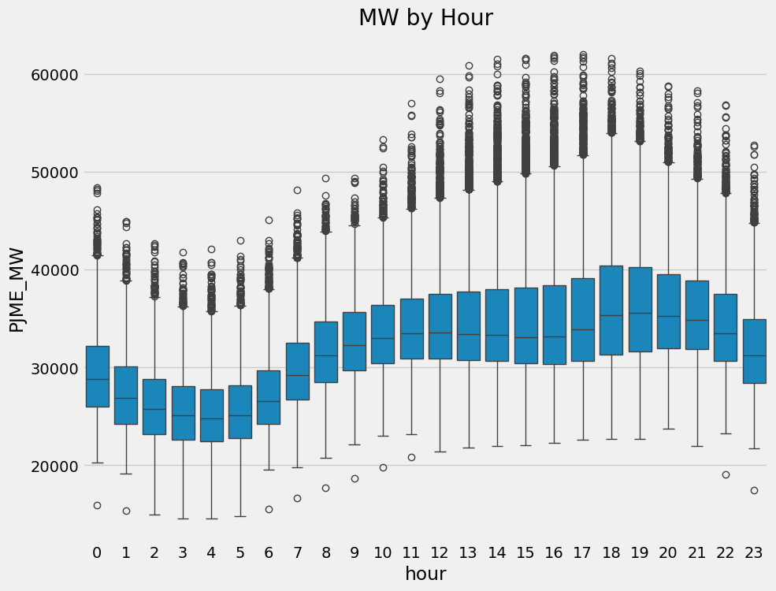
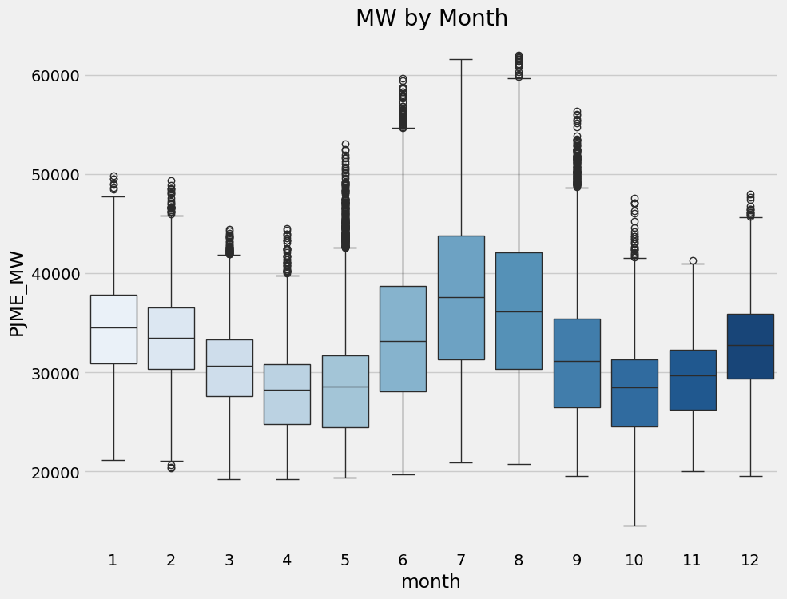
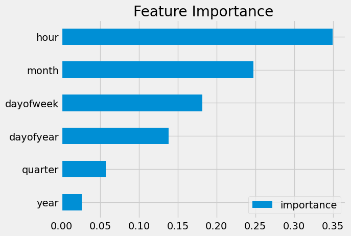
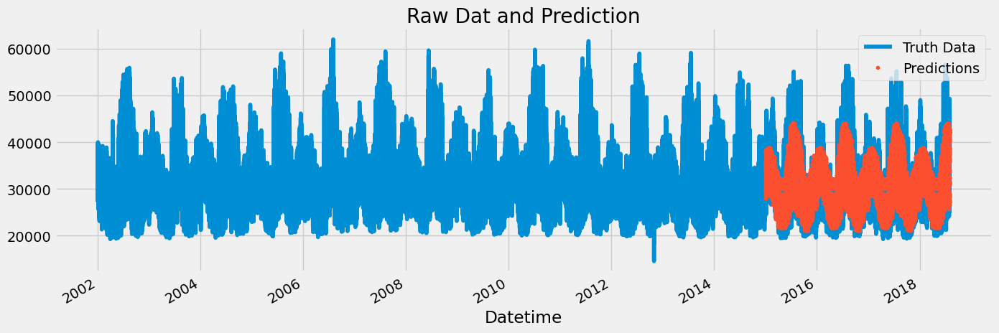
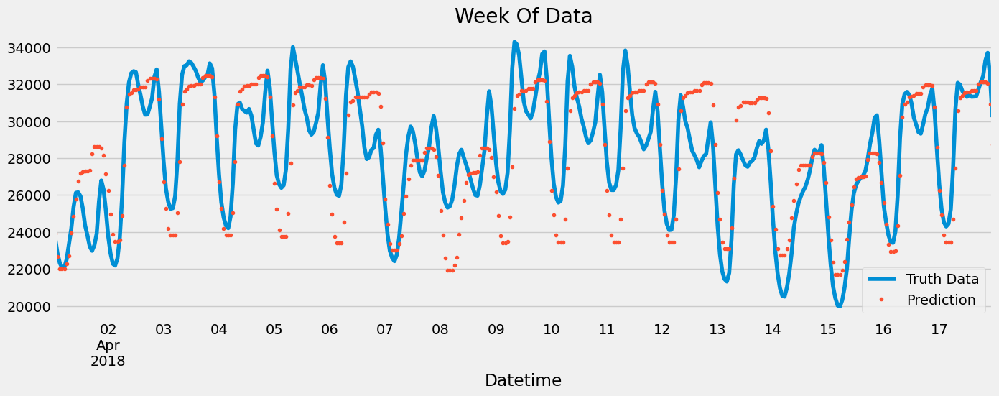

import pandas as pd
import numpy as np
import matplotlib.pyplot as plt
import seaborn as sns
from fastai.imports import *
import xgboost as xgb
from sklearn.metrics import mean_squared_error
import zipfile,kaggle
import osXGBoost
color_pal = sns.color_palette()
plt.style.use('fivethirtyeight')from nbdevAuto.functions import *
import nbdevAuto.functionsname = 'hourly-energy-consumption'
path = Path(f'Data/{name}')
user = 'robikscube'
kaggle_dataset_download(user = user,
name = name)df = pd.read_csv(f'{path}/PJME_hourly.csv')
df = df.set_index('Datetime')
df.index = pd.to_datetime(df.index)df.plot(style='.',
figsize=(15, 5),
color=color_pal[0],
title='PJME Energy Use in MW')
plt.show()
Train / Test Split
train = df.loc[df.index < '01-01-2015']
test = df.loc[df.index >= '01-01-2015']
fig, ax = plt.subplots(figsize=(15, 5))
train.plot(ax=ax, label='Training Set', title='Data Train/Test Split')
test.plot(ax=ax, label='Test Set')
ax.axvline('01-01-2015', color='black', ls='--')
ax.legend(['Training Set', 'Test Set'])
plt.show()
df.loc[(df.index > '01-01-2010') & (df.index < '01-08-2010')] \
.plot(figsize=(15, 5), title='Week Of Data')
plt.show()
Feature Creation
def create_features(df):
"""
Create time series features based on time series index.
"""
df = df.copy()
df['hour'] = df.index.hour
df['dayofweek'] = df.index.dayofweek
df['quarter'] = df.index.quarter
df['month'] = df.index.month
df['year'] = df.index.year
df['dayofyear'] = df.index.dayofyear
df['dayofmonth'] = df.index.day
df['weekofyear'] = df.index.isocalendar().week
return df
df = create_features(df)Visualize our Feature / Target Relationship
fig, ax = plt.subplots(figsize=(10, 8))
sns.boxplot(data=df, x='hour', y='PJME_MW')
ax.set_title('MW by Hour')
plt.show()
fig, ax = plt.subplots(figsize=(10, 8))
sns.boxplot(data=df, x='month', y='PJME_MW', palette='Blues')
ax.set_title('MW by Month')
plt.show()/tmp/ipykernel_109462/958582662.py:3: FutureWarning:
Passing `palette` without assigning `hue` is deprecated and will be removed in v0.14.0. Assign the `x` variable to `hue` and set `legend=False` for the same effect.
sns.boxplot(data=df, x='month', y='PJME_MW', palette='Blues')
Create our Model
train = create_features(train)
test = create_features(test)
FEATURES = ['dayofyear', 'hour', 'dayofweek', 'quarter', 'month', 'year']
TARGET = 'PJME_MW'
X_train = train[FEATURES]
y_train = train[TARGET]
X_test = test[FEATURES]
y_test = test[TARGET]reg = xgb.XGBRegressor(base_score=0.5, booster='gbtree',
n_estimators=1000,
early_stopping_rounds=50,
objective='reg:linear',
max_depth=3,
learning_rate=0.01)
reg.fit(X_train, y_train,
eval_set=[(X_train, y_train), (X_test, y_test)],
verbose=100)[0] validation_0-rmse:32605.13970 validation_1-rmse:31657.15729/home/thekkel/mambaforge/envs/cfast/lib/python3.11/site-packages/xgboost/core.py:160: UserWarning: [17:58:09] WARNING: /workspace/src/objective/regression_obj.cu:209: reg:linear is now deprecated in favor of reg:squarederror.
warnings.warn(smsg, UserWarning)[100] validation_0-rmse:12584.35462 validation_1-rmse:11747.28803
[200] validation_0-rmse:5837.33066 validation_1-rmse:5363.58554
[300] validation_0-rmse:3923.28511 validation_1-rmse:4020.48045
[400] validation_0-rmse:3447.54638 validation_1-rmse:3860.60088
[500] validation_0-rmse:3288.19208 validation_1-rmse:3816.37862
[600] validation_0-rmse:3206.55619 validation_1-rmse:3779.04119
[700] validation_0-rmse:3153.61368 validation_1-rmse:3754.45684
[800] validation_0-rmse:3114.34038 validation_1-rmse:3738.38209
[900] validation_0-rmse:3084.39550 validation_1-rmse:3730.01893
[989] validation_0-rmse:3059.85847 validation_1-rmse:3727.94591XGBRegressor(base_score=0.5, booster='gbtree', callbacks=None,
colsample_bylevel=None, colsample_bynode=None,
colsample_bytree=None, device=None, early_stopping_rounds=50,
enable_categorical=False, eval_metric=None, feature_types=None,
gamma=None, grow_policy=None, importance_type=None,
interaction_constraints=None, learning_rate=0.01, max_bin=None,
max_cat_threshold=None, max_cat_to_onehot=None,
max_delta_step=None, max_depth=3, max_leaves=None,
min_child_weight=None, missing=nan, monotone_constraints=None,
multi_strategy=None, n_estimators=1000, n_jobs=None,
num_parallel_tree=None, objective='reg:linear', ...)In a Jupyter environment, please rerun this cell to show the HTML representation or trust the notebook. On GitHub, the HTML representation is unable to render, please try loading this page with nbviewer.org.
XGBRegressor(base_score=0.5, booster='gbtree', callbacks=None,
colsample_bylevel=None, colsample_bynode=None,
colsample_bytree=None, device=None, early_stopping_rounds=50,
enable_categorical=False, eval_metric=None, feature_types=None,
gamma=None, grow_policy=None, importance_type=None,
interaction_constraints=None, learning_rate=0.01, max_bin=None,
max_cat_threshold=None, max_cat_to_onehot=None,
max_delta_step=None, max_depth=3, max_leaves=None,
min_child_weight=None, missing=nan, monotone_constraints=None,
multi_strategy=None, n_estimators=1000, n_jobs=None,
num_parallel_tree=None, objective='reg:linear', ...)Feature Importance
fi = pd.DataFrame(data=reg.feature_importances_,
index=reg.feature_names_in_,
columns=['importance'])
fi.sort_values('importance').plot(kind='barh', title='Feature Importance')
plt.show()
Forecast on Test
test['prediction'] = reg.predict(X_test)
df = df.merge(test[['prediction']], how='left', left_index=True, right_index=True)
ax = df[['PJME_MW']].plot(figsize=(15, 5))
df['prediction'].plot(ax=ax, style='.')
plt.legend(['Truth Data', 'Predictions'])
ax.set_title('Raw Dat and Prediction')
plt.show()
ax = df.loc[(df.index > '04-01-2018') & (df.index < '04-18-2018')]['PJME_MW'] \
.plot(figsize=(15, 5), title='Week Of Data')
df.loc[(df.index > '04-01-2018') & (df.index < '04-18-2018')]['prediction'] \
.plot(style='.')
plt.legend(['Truth Data','Prediction'])
plt.show()
Score (RMSE)
score = np.sqrt(mean_squared_error(test['PJME_MW'], test['prediction']))
print(f'RMSE Score on Test set: {score:0.2f}')RMSE Score on Test set: 3726.80Calculate Error
- Look at the worst and best predicted days
test['error'] = np.abs(test[TARGET] - test['prediction'])
test['date'] = test.index.date
test.groupby(['date'])['error'].mean().sort_values(ascending=False).head(10)date
2016-08-13 12879.484619
2016-08-14 12772.887207
2015-02-20 11186.031494
2016-09-09 10966.513102
2016-09-10 10889.102214
2018-01-06 10642.975830
2016-08-12 10041.172689
2015-02-21 9988.168783
2015-02-16 9900.809326
2018-01-07 9852.571370
Name: error, dtype: float64Next Steps
- More robust cross validation
- Add more features (weather forecast, holidays)